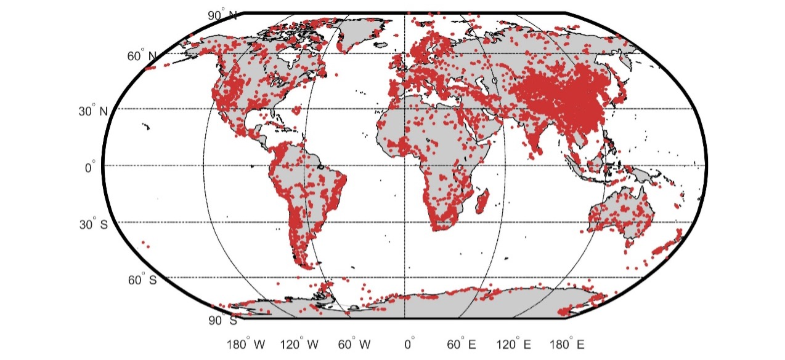

I work on developing, contributing to, and applying quantitative methods while compiling and curating large-scale data resources for deep-time Earth system science.
Quantitative Methods
AstroGeoFit
I served as a key scientific contributor to the design and validation of the current AstroGeoFit Python package, helping shape its workflow and user-facing structure through extensive application and testing. By combining a detailed understanding of its algorithms and data structures with expertise in Earth science and time-series analysis, I can connect the computational framework to the complexities of real geological records and develop effective strategies for applying the method and interpreting the results.
Time-Series Analysis
I apply time-series and spectral methods to identify, characterize, and interpret patterns in geological records, including cyclostratigraphic sequences and long-term time series of zircon production.
Bayesian Methods for Geological Data Analysis
I apply Bayesian and probabilistic methods to large-scale zircon data and cyclostratigraphic time series, particularly for uncertainty quantification and parameter estimation.
Large-Scale Geoscientific Data Integration
I compile, curate, and analyze large geological datasets for long-term Earth system studies.
Data Resources
Zircon U-Th-Pb geochronological Database
We present here a database of zircon U-Th-Pb geochronology, which samples the global continental crust and spans nearly the entire Earth's history. This database collects ~2,000,000 geochronology records from ~12,000 papers and theses over a period exceeding 50 years and is by far the largest geochronology database to our knowledge. The lithology of the host rock of the zircon samples includes sedimentary, igneous, and metamorphic rocks. The source references are from the following academic publishers: Elsevier, Cambridge, Geological Society of London, Oxford, Springer, Taylor & Francis, Wiley, and China National Knowledge Infrastructure (CNKI). Here, the zircon data compilation contains "Database" files and a "References" file. This database includes four isotope ratios (206Pb/238U, 207Pb/235U, 207Pb/206Pb, and 208Pb/232Th) and errors, four corresponding ages and errors, as well as sample information, dating instrument, dating reference material, host rock lithology, sampling location, and reference number. This collection not only provides us with a comprehensive platform to study zircon chronological data in deep time and space but also makes it possible to explore the underlying geodynamic mechanism and the evolution of the Earth system.

- License: CC BY 4.0
- Citation: Wu, Y., Fang, X., & Ji, J. (2023). Global zircon U-Th-Pb geochronology database (2.1) [Data set]. Zenodo: https://doi.org/10.5281/zenodo.8303076
- Download: https://doi.org/10.5281/zenodo.8303076